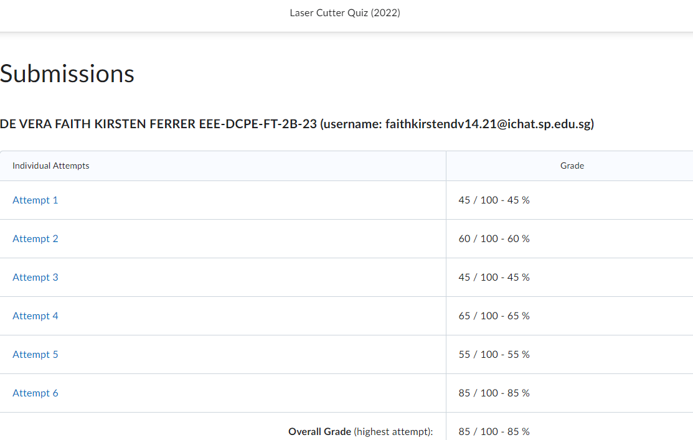
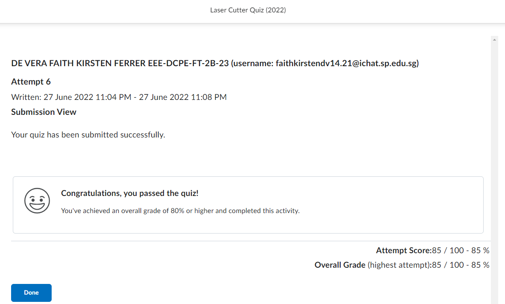

Laser Cut Musical Box
What is Laser Cutting?
For this Laser Cutting assignment, we are tasked to make a musical box for the musical instrument and I came up with this for my musical box to have 2 lids.
What are the Kinds of cuts I used?
Vector Cut
Raster Engraving
Laser Cuttng Quiz
But first we have to do a Laser Cutting Quiz and attend a practical test in order to be certified to use the laser cutter.
It took me about 6 attempts before i passed the quiz.


Fusion360 Parameters
Firstly I created parameters to set the measurements that I can easily use for later by calling the name of the parameter which makes changing the measurements easier to do.

- Length, Width, Height and Thickness are the measurements for the size of the box and how thick the plywood is.
- LSTab, WSTab and HSTab are the number of tabs that I want
- LTabForm, WTabForm and HTabForm are the formulas to calculate the no. of tabs equally separated
- LPattForm, WPattForm and HPattForm are the formulas for the distance of the rectangle pattern for the finger joints
- LidInnerHole is the size of the inner hole at the front body for the moveable lid.
- LHandle and WHandle is the measurements for the size of the hole for the handle to fit.
Base Body
- Starting with the base of the box I first made a box using the user parameters i put the length, width and heigh of the box.
- Create a new sketch and using a 2 point rectangle, draw the shape of the tab and using LTabForm and Thickness parameters. Use the sketch dimension to space out the tab.
- Using Extrude tool, cut the rectangle shape you made to make the tab.
- Then using the rectangular pattern, using the features type click on to the rectangle shape that you cut in Step 3 and select the direction that is highlighted in blue then use LPattForm which is the distance and quantity is LSTab parameters.
- Following the same steps from 1 to 4, do it on the width side of the base.


Front body
- Now we will start sketching the front so place a new sketch infront of the tab and start creating your front body using your Length and Height parameters. I used the center circle and offset tool to make the circles and hole for the moveable lid later.
- Then extrude the front body sketch using the same thickness parameters. Make syure it is a new body.
- As you have noticed the front body does not have the tabs that were created on the base. In order for the front body to have the tabs, use the combine tool with the target body being the front and the tool body the base and remember to tick the keep tools option. Now your front body will have tabs.
- Follow the same steps as the front body to create the tabs for the height.


Back Body
- To create back body similar to the front, using extrude tool start from the other end of the length side where the back will be and extrude the distance using Thickness parameter and make sure it is a new body.
- Using combine tool, target body is the base while tool body is the back to make tab at the base.


Left Body
- Start with a new sketch on the left and start creating your left body using width and height parameters and then extrude the sketch using the same thickness parameters. Making sure it is a new body.
- Using the combine tool, target body the left body that you have just extruded while tool body is the rest of the other bodies to make the tabs on the left body.


Right Body
- Using the extrude tool, to create the right body similar to the left body, start from the other end of the right side and extrude the distance using Thickness parameter and make sure it is a new body.
- Using combine tool, target body the base and tool body the newly created right body to make a tab for the right side of the base
- Using combine tool, target body the front and tool body the newlyy created right body to make a tab for the right side of the front
- Do the same for the back body.


Hole for Handle
- To make the hole for the handle, I started a new sketch on the right body and using a 2 point rectangle, I made a rectangle using LHandle and WHandle parameters.
- Then extrude the rectangle to make a hole.


Box Lids
- For the lid I made a box on top of the 4 side and extrude the height using the thickness parameter, make sure it is a new body.
- Then I moved the box 1mm higher than what it was so that it wasn't merging with the other bodies.
- Then I extrude the top part of the front and back body by 1mm so that when opening and closing the lid, the lid will close nicely.
- Then create a new sketch on the lid to be able to make some holes so that the lid will be able to move to open and close the lid.
- Then extrude out the small boxes
- Next we will use a midplane under construct to find the mid plane on 2 sides of the lid (front & back)
- Using Mirror tool, I was able to mirror the same holes on the other side. Remember to hide the other bodies except the lid first. You can then hide the midplane after mirroring the holes on the other side.
- Using Fillet tool, fillet the edges of the hole handle
- Next I used the midplane again to find the midplane on 2 sides of the lid (left & right)
- Then we will spilt the lid by using the spilt body tool, remembering to hide the other bodies except the lid. You will now end up with 2 bodies a left lid and right lid.


How to Put Musical box parts into DXF file
- Click the one side of the box and right click your mouse and select create sketch.
- Then right click the sketch you just created and select save as DXF.
- Do the same for the other sides
How to transfer DXF files into a SVG file for laser cutting
- First create a new document and to rotate your page to make it landscape go to file > document properties > display > orientation.
- You can also go to zoom > zoom page to zoom in on the page.
- Next import your pieces into the document.
- Those pieces that you want to vector cut make sure the line width is hairline. You can find it under fill and stroke > Stroke Style > Width. Make sure the stroke color is RGB red.
- For engraving it can be any line width as long as it's not hairline and stroke color and fill is RGB green.
- I wanted to add text to my design and add some nice designs using these pictures.
- I then trace out the pictures and placed it onto the pieces that I want it to be engraved. Remember to remove the pictures after you finished tracing them out.
- I also group the different parts of my box (e.g. Right side, Left side etc.) so that they will all stick together.
- And there is my finished product ready to be laser cut!


After Laser Cutting
- These are how the pieces look like after laser cutting
- I then used super glue to glue the side pieces and base together but I used hot glue to glue the musical instrument to the base.